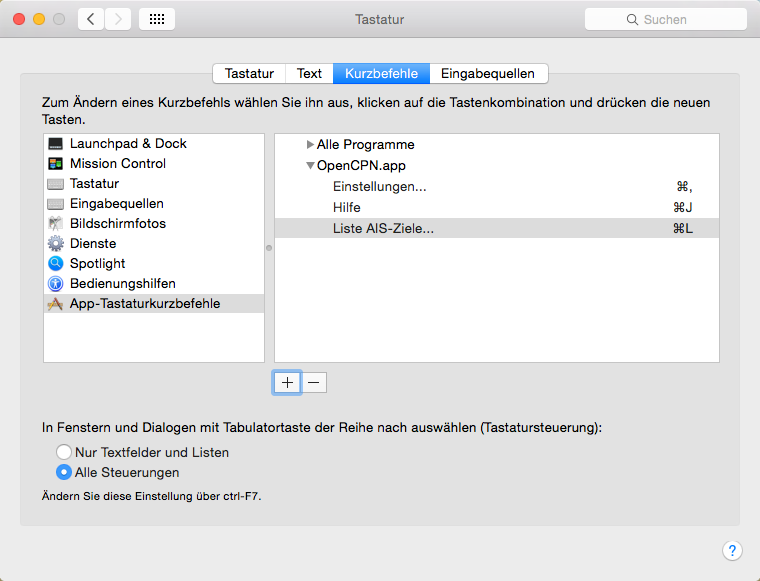

Tastaturkürzel
F-Tasten werden bei Mac OS X zusammen mit fn-Taste verwendet. Eventuell sind in den OS X Systemeinstellungen Konflikte mit anderen Tastatur-Einstellungen zu prüfen. Bei Mac OS X werden Ctrl Tastenkombinationen nicht mit Ctrl sondern mit der Cmd Taste ⌘ erreicht.
Die oben im Programm festgelegten Tastaturkürzel lassen sich bei Mac OS X in den Systemeinstellungen/Tastatur, Lasche Kurzbefehle unter App-Tastaturkurzbefehle ändern oder ergänzen. Im Bild unten wurde neben den vorhandenen Einträgen für Hilfe und Einstellungen... ein neuer Eintrag Liste AIS-Ziele... gemacht, der mit diesem Kürzel dann auch in dem Menüpunkt dazu auftaucht.
